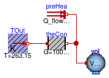

Package with example for how to build a model for space cooling
This package contains examples with step-by-step instructions for how to build a system model for space cooling as shown in the figure below. The temperautures correspond to design conditions that will be used to size the components. The room heat capacity has been increased by a factor of three to approximate the thermal storage effect of furniture and building constructions.

The model consists of
To explain the implementation of this model, the model has been created in the following three stages:
Extends from Modelica.Icons.ExamplesPackage (Icon for packages containing runnable examples).
| Name | Description |
|---|---|
| First part of the system model, consisting of the room with heat transfer | |
| System2 | Second part of the system model with air supply and open loop control |
| System3 | Third part of the system model with air supply and closed loop control |
 Buildings.Examples.Tutorial.SpaceCooling.System1
Buildings.Examples.Tutorial.SpaceCooling.System1
First part of the system model, consisting of the room with heat transfer

This part of the system model implements the room with a heat gain. The room is simplified as a volume of air, a prescribed heat source for the internal convective heat gain, and a heat conductor for steady-state heat conduction to the outside. To increase the heat capacity of the room, such as due to heat stored in furniture and in building constructions, the heat capacity of the room air was increased by a factor of three. The convective heat transfer coefficient is lumped into the heat conductor model.
This section describes step by step how we implemented the model.
First, to define the medium properties, we added the declaration
replaceable package MediumA =
Buildings.Media.Air;
This will allow the propagation of the medium model to all models that contain air. In this example, there is only one model with air, but when we connect an air supply, there will be multiple models that use this medium.
We called the medium MediumA to distinguish it from
MediumW that we will use in later versions of the model for components that
have water as a medium. Because we do not anticipate saturated air, we used
the medium model
Buildings.Media.Air
instead of
Buildings.Media.GasesPTDecoupled.MoistAir
as the latter is computationally more expensive.
Note that although the medium model is for unsaturated air, the cooling coil
will be able to reduce the moisture content of the medium. But since
the air outlet state of the cooling coil has a relative humidity below 100%,
we can use this medium model for unsaturated air.
We also defined the system-level parameters
parameter Modelica.SIunits.Volume V=6*10*3 "Room volume";
parameter Modelica.SIunits.MassFlowRate mA_flow_nominal = V*6/3600
"Nominal mass flow rate";
parameter Modelica.SIunits.HeatFlowRate QRooInt_flow = 1000
"Internal heat gains of the room";
to declare that the room volume is 180 m3, that the room has a nominal mass flow rate of 6 air changes per hour and that the internal heat gains of the room are 1000 Watts. These parameters have been declared at the top-level of the model as they will be used in several other models. Declaring them at the top-level allows to propagate them to other models, and to easily change them at one location should this be required when revising the model.
To model the room air, approximated as a completely mixed volume of air,
an instance of
Buildings.Fluid.MixingVolumes.MixingVolume
has been used, as this model can be used with dry air or moist air.
The medium model has been set to MediumA.
We set the parameter
energyDynamics=Modelica.Fluid.Types.Dynamics.FixedInitial
which will cause the initial conditions of the volume to be fixed to
the values specified by the parameters on the Initialization
tab.
The nominal mass flow rate of the volume is set to mA_flow_nominal.
The nominal mass flow rate is used for numerical reasons and should be set
to the approximate order of magnitude. It only has an effect if the mass flow
rate is near zero and what "near zero" means depends on the magnitude of
m_flow_nominal, as it is used for the default value of the parameter
m_flow_small on the Assumptions tag of the model.
See also
Buildings.Fluid.UsersGuide
for an explanation of the purpose of m_flow_small.
To increase the heat capacity of the room air to approximate
energy storage in furniture and building constructions, we set the parameter
mSenFac=3 in the instance vol.
This will increase the sensible heat capacity
of the room air by a factor of three.
We used the instance heaCon to model the heat conductance to the ambient.
Since our room should have a heat loss of 10 kW at a temperature difference
of 30 Kelvin, we set the conductance to
G=10000 ⁄ 30 W/K.
Finally, we used the instance preHea to model a prescribed, constant heat gain of
1000 Watts, such as due to internal heat source.
This completes the initial version of the model. When simulating the model for 3 hours, or 10800 seconds, the response shown below should be seen.

To verify the correctness of the model, we can compare the simulated results to the following analytical solutions:
Both analytical values agree with the simulation results shown in the above figure.
For a more realistic model of a room, the model Buildings.Rooms.MixedAir could have been used. For transient heat conduction, models from the package Buildings.HeatTransfer.Conduction could have been used.
Extends from Modelica.Icons.Example (Icon for runnable examples).
| Type | Name | Default | Description |
|---|---|---|---|
| replaceable package MediumA | Buildings.Media.Air | ||
| Volume | V | 6*10*3 | Room volume [m3] |
| MassFlowRate | mA_flow_nominal | V*6/3600 | Nominal mass flow rate [kg/s] |
| HeatFlowRate | QRooInt_flow | 1000 | Internal heat gains of the room [W] |
| Type | Name | Description |
|---|---|---|
| replaceable package MediumA | ||
 Buildings.Examples.Tutorial.SpaceCooling.System2
Buildings.Examples.Tutorial.SpaceCooling.System2
Second part of the system model with air supply and open loop control

This part of the system model adds a space cooling with
open loop control to the model
Buildings.Examples.Tutorial.SpaceCooling.System1.
The space cooling consist of a model for the ambient conditions
out, a heat recovery hex,
a cooling coil cooCoi and a fan fan.
There is also a return duct that connects the room volume
vol with the heat recovery.
Weather data are obtained from the instance weaDat
which is connected to the model for the ambient air conditions out
and the outside temperature that is used for the heat conductance
TOut.
In this model, the duct pressure loss is not modeled explicitly, but rather lumped into the pressure drops of the heat exchangers.
This section describes the steps that were required to build the model.
The first step was to copy the model Buildings.Examples.Tutorial.SpaceCooling.System1. Note that for larger models, it is recommended to extend models instead of copying them to avoid code duplication, as code duplication makes it hard to maintain different versions of a model. But for this model, we copied the old model to avoid this model to be dependent on Buildings.Examples.Tutorial.SpaceCooling.System1.
As this model will also use water as the medium for the water-side of the cooling coil, we added the medium declaration
replaceable package MediumW =
Buildings.Media.ConstantPropertyLiquidWater;
Next, we defined system-level parameters for the water and air temperatures and the water and air mass flow rates. These declarations are essentially the design calculations which are then used to size the components and flow rates. It is good practice to list them at the top-level of the model to allow easy change of temperatures or loads at a central place, and automatic propagation of the new results to models that use these parameters.
Note that we use an assignment for the nominal air mass flow rate
mA_flow_nominal that is different from the assignment in
Buildings.Examples.Tutorial.SpaceCooling.System1 because
now, the air flow rate is a result of the sizing calculations.
The calculations are as follows:
//////////////////////////////////////////////////////////
// Heat recovery effectiveness
parameter Real eps = 0.8 "Heat recovery effectiveness";
/////////////////////////////////////////////////////////
// Air temperatures at design conditions
parameter Modelica.SIunits.Temperature TASup_nominal = 273.15+18
"Nominal air temperature supplied to room";
parameter Modelica.SIunits.Temperature TRooSet = 273.15+24
"Nominal room air temperature";
parameter Modelica.SIunits.Temperature TOut_nominal = 273.15+30
"Design outlet air temperature";
parameter Modelica.SIunits.Temperature THeaRecLvg=
TOut_nominal - eps*(TOut_nominal-TRooSet)
"Air temperature leaving the heat recovery";
/////////////////////////////////////////////////////////
// Cooling loads and air mass flow rates
parameter Modelica.SIunits.HeatFlowRate QRooInt_flow=
1000 "Internal heat gains of the room";
parameter Modelica.SIunits.HeatFlowRate QRooC_flow_nominal=
-QRooInt_flow-10E3/30*(TOut_nominal-TRooSet)
"Nominal cooling load of the room";
parameter Modelica.SIunits.MassFlowRate mA_flow_nominal=
1.3*QRooC_flow_nominal/1006/(TASup_nominal-TRooSet)
"Nominal air mass flow rate, increased by factor 1.3 to allow for recovery after temperature setback";
parameter Modelica.SIunits.TemperatureDifference dTFan = 2
"Estimated temperature raise across fan that needs to be made up by the cooling coil";
parameter Modelica.SIunits.HeatFlowRate QCoiC_flow_nominal=4*
(QRooC_flow_nominal + mA_flow_nominal*(TASup_nominal-THeaRecLvg-dTFan)*1006)
"Cooling load of coil, taking into account economizer, and increased due to latent heat removal";
/////////////////////////////////////////////////////////
// Water temperatures and mass flow rates
parameter Modelica.SIunits.Temperature TWSup_nominal = 273.15+16
"Water supply temperature";
parameter Modelica.SIunits.Temperature TWRet_nominal = 273.15+12
"Water return temperature";
parameter Modelica.SIunits.MassFlowRate mW_flow_nominal=
QCoiC_flow_nominal/(TWRet_nominal-TWSup_nominal)/4200
"Nominal water mass flow rate";
Now, we explain the component models that are used to assemble the system model.
The weather data are obtained from the instance
weaDat in which we set the location to Chicago, IL.
We also configured the model to use a constant atmospheric pressure,
as opposed to the pressure from the weather file, as we are not interested
in modeling the effect of changes in the atmospheric pressure.
Furthermore, we configured the model to use a constant dry-bulb
temperature of TOut_nominal. This helps in testing the
model at the design conditions, and can easily be changed later to
use weather data from the file.
Thus, although we use a model that reads a weather data file, for
now we want to use constant outside conditions to simplify the testing
of the model.
To use weather data for the heat conduction, we changed the instance
TOut to a model that allows obtaining the temperature from
the input port.
To connect this input port to weather data, we added the connector
weaBus, as this is needed to pick a single variable, the
dry-bulb temperature, from the weather bus which carries all weather data.
To model ambient outside air conditions, we use the instance
out which is connected directly to the weather data model
weaDat.
In this model, we also set the medium model to MediumA.
Next, we set in all new component models the medium model to
MediumA if it is part of the air system, or to
MediumW if it is part of the water system.
From the information section of the cooling coil, we see
that its parameter Medium1 needs to be water,
and Medium2 needs to be air.
Next, we configured the air-side components of the model.
For the heat recovery hex, we set the effectiveness
to the parameter eps, which we defined earlier to be
0.8.
We also set the nominal mass flow rates to mA_flow_nominal
and the pressure drops on both sides to 200 Pascals.
This pressure drop is attained when the air mass flow rate is
equal to mA_flow_nominal, and it is adjusted for
other flow rates using a quadratic law with regularization when
the flow rate is below 10% of mA_flow_nominal.
This default value can be changed on the tab Flow resistance
of the model.
To configure the cooling coil model cooCoi, we set the
water and air side nominal mass flow rates and pressure drops to
m1_flow_nominal=mW_flow_nominal,
m2_flow_nominal=mA_flow_nominal,
dp1_nominal=6000,
dp2_nominal=200,
This model also requires the specification of the UA-value. We assign this value using the equation
UA = Q̇ ⁄ lmtd,
where Q̇ is the exchanged heat and lmtd is the logarithmic mean temperature difference. The computation of the UA is done using the parameter assignment
UA_nominal=-QCoiC_flow_nominal/
Buildings.Fluid.HeatExchangers.BaseClasses.lmtd(
T_a1=THeaRecLvg,
T_b1=TASup_nominal,
T_a2=TWSup_nominal,
T_b2=TWRet_nominal)
which calls the function Buildings.Fluid.HeatExchangers.BaseClasses.lmtd. In order to see the coil inlet and outlet temperatures, we set the parameter
show_T = true
Its default value is false, as this setting can lead to faster computation
in large system models in which the flow rate crosses zero, because crossing zero
triggers the numerical solution for a state-event which can be computationally expensive.
To use prescribed initial values for the state variables of the cooling coil, we set the parameter
energyDynamics=Modelica.Fluid.Types.Dynamics.FixedInitial
For the fan, we set the nominal mass flow rate to mA_flow_nominal
and also connect its input port to the component mAir_flow,
which assigns a constant air flow rate.
We leave the fan efficiency at its default value of 0.7.
We set the parameter
dynamicBalance=false
to configure the fan to be a steady-state model. This was done as we are using a constant fan speed in this example.
For the two temperature sensors in the supply duct, we also set the nominal mass flow
rate to mA_flow_nominal.
Now, what is left is to configure the water-side components.
souWat so that
it obtains its mass flow rate from the input connector,
and we connected this input connector to the constant block
mWat_flow.
To set the water temperature that leaves this component,
we set the parameter T=TWSup_nominal.
Alternatively, we could have used the model
Buildings.Fluid.Movers.FlowControlled_m_flow
as is used for the fan, but we chose to use the simpler model
Buildings.Fluid.Sources.MassFlowSource_T
as this model allows the direct specification of the
leaving fluid temperature.
To complete the water circuit, we also used the instance sinWat.
This model is required for the water to flow out of the heat exchanger into
an infinite reservoir. It is also required to set a reference for the
pressure of the water loop.
Since in our model, no water flows out of this reservoir, there is no need to set
its temperature.
This completes the initial version of the model. When simulating the model, the response shown below should be seen.

If we were interested in computing electricity use for the pump, we could have used the same model as for the fan.
To explicitly model duct pressure drop, we could have added
Buildings.Fluid.FixedResistances.FixedResistanceDpM to the model.
However, computationally it is cheaper to lump these pressure drops into other component models.
In fact, rather than separately computing the pressure drop of the heat recovery and the air-side
pressure drop of the cooling coil, we could have modeled the cooling coil pressure drop as
dp_nominal = 2*200+200 and set for the heat recovery
dp1_nominal = 0 and
dp2_nominal = 0. Setting the nominal pressure drop to zero will remove this equation
from the model.
Extends from Modelica.Icons.Example (Icon for runnable examples).
| Type | Name | Default | Description |
|---|---|---|---|
| replaceable package MediumA | Buildings.Media.Air | ||
| replaceable package MediumW | Buildings.Media.Water | ||
| Volume | V | 6*10*3 | Room volume [m3] |
| Real | eps | 0.8 | Heat recovery effectiveness |
| Temperature | TASup_nominal | 273.15 + 18 | Nominal air temperature supplied to room [K] |
| Temperature | TRooSet | 273.15 + 24 | Nominal room air temperature [K] |
| Temperature | TOut_nominal | 273.15 + 30 | Design outlet air temperature [K] |
| Temperature | THeaRecLvg | TOut_nominal - eps*(TOut_nom... | Air temperature leaving the heat recovery [K] |
| HeatFlowRate | QRooInt_flow | 1000 | Internal heat gains of the room [W] |
| HeatFlowRate | QRooC_flow_nominal | -QRooInt_flow - 10E3/30*(TOu... | Nominal cooling load of the room [W] |
| MassFlowRate | mA_flow_nominal | 1.3*QRooC_flow_nominal/1006/... | Nominal air mass flow rate, increased by factor 1.3 to allow for recovery after temperature setback [kg/s] |
| TemperatureDifference | dTFan | 2 | Estimated temperature raise across fan that needs to be made up by the cooling coil [K] |
| HeatFlowRate | QCoiC_flow_nominal | 4*(QRooC_flow_nominal + mA_f... | Cooling load of coil, taking into account economizer, and increased due to latent heat removal [W] |
| Temperature | TWSup_nominal | 273.15 + 16 | Water supply temperature [K] |
| Temperature | TWRet_nominal | 273.15 + 12 | Water return temperature [K] |
| MassFlowRate | mW_flow_nominal | QCoiC_flow_nominal/(TWRet_no... | Nominal water mass flow rate [kg/s] |
| Type | Name | Description |
|---|---|---|
| replaceable package MediumA | ||
| replaceable package MediumW | ||
| Bus | weaBus | |
Buildings.Examples.Tutorial.SpaceCooling.System3
Third part of the system model with air supply and closed loop control

This part of the system model modifies Buildings.Examples.Tutorial.SpaceCooling.System2 to use the actual outside temperature for a summer day, and it adds closed loop control. The closed loop control measures the room temperature and switches the chilled water flow rate on or off.
This section describes how we modified Buildings.Examples.Tutorial.SpaceCooling.System2 to build this model.
The first step was to copy the model Buildings.Examples.Tutorial.SpaceCooling.System2.
Next, we changed in weaDat the parameter that determines
whether the outside dry bulb temperature is used from the weather data file
or set to a constant value. This can be accomplished in the GUI of the weather data reader
as follows:

If the model is now simulated, the following plot could be generated that shows that the room is cooled too much due to the open loop control:

To add closed loop control, we proceeded as follows.
First, we made an instance of the on/off controller
Modelica.Blocks.Logical.OnOffController and set its name to con.
We set the parameter for the bandwidth to 1 Kelvin.
This model requires as an input the measured temperature and the set point.
For the set point, we made the instance TRooSetPoi to feed a constant
set point into the controller.
The instance senTemRoo has been added to measure the room air temperature.
Note that we decided to measure directly the room air temperature. If we would have used
a temperature sensor in the return air stream, then its temperature would never change when
the mass flow rate is zero, and hence it would not measure how the room temperature changes
when the fan is off.
Since the controller output is a boolean signal, but the instance
souWat needs a real signal as an input for the water mass flow rate,
we needed to add a conversion block. We therefore replaced the instance
mWat_flow from a constant block to the block
Modelica.Blocks.Math.BooleanToReal.
Because the cooling control has a reverse action, i.e.,
if the measured value exceeds the set point, the system should switch
on instead of off, we configured the parameters of the conversion block
as follow:
realTrue=0 realFalse=mW_flow_nominal
This will output mW_flow_nominal when the room temperature
is above the set point, and 0 otherwise.
This completes building the model shown in the figure on Buildings.Examples.Tutorial.SpaceCooling. When simulating the model, the response shown below should be seen.


To add a continuous controller for the coil water flow rate, we could have used the model Buildings.Controls.Continuous.LimPID.
Extends from Modelica.Icons.Example (Icon for runnable examples).
| Type | Name | Default | Description |
|---|---|---|---|
| replaceable package MediumA | Buildings.Media.Air | ||
| replaceable package MediumW | Buildings.Media.Water | ||
| Volume | V | 6*10*3 | Room volume [m3] |
| Real | eps | 0.8 | Heat recovery effectiveness |
| Temperature | TASup_nominal | 273.15 + 18 | Nominal air temperature supplied to room [K] |
| Temperature | TRooSet | 273.15 + 24 | Nominal room air temperature [K] |
| Temperature | TOut_nominal | 273.15 + 30 | Design outlet air temperature [K] |
| Temperature | THeaRecLvg | TOut_nominal - eps*(TOut_nom... | Air temperature leaving the heat recovery [K] |
| HeatFlowRate | QRooInt_flow | 1000 | Internal heat gains of the room [W] |
| HeatFlowRate | QRooC_flow_nominal | -QRooInt_flow - 10E3/30*(TOu... | Nominal cooling load of the room [W] |
| MassFlowRate | mA_flow_nominal | 1.3*QRooC_flow_nominal/1006/... | Nominal air mass flow rate, increased by factor 1.3 to allow for recovery after temperature setback [kg/s] |
| TemperatureDifference | dTFan | 2 | Estimated temperature raise across fan that needs to be made up by the cooling coil [K] |
| HeatFlowRate | QCoiC_flow_nominal | 4*(QRooC_flow_nominal + mA_f... | Cooling load of coil, taking into account economizer, and increased due to latent heat removal [W] |
| Temperature | TWSup_nominal | 273.15 + 16 | Water supply temperature [K] |
| Temperature | TWRet_nominal | 273.15 + 12 | Water return temperature [K] |
| MassFlowRate | mW_flow_nominal | QCoiC_flow_nominal/(TWRet_no... | Nominal water mass flow rate [kg/s] |
| Type | Name | Description |
|---|---|---|
| replaceable package MediumA | ||
| replaceable package MediumW | ||
| Bus | weaBus | |